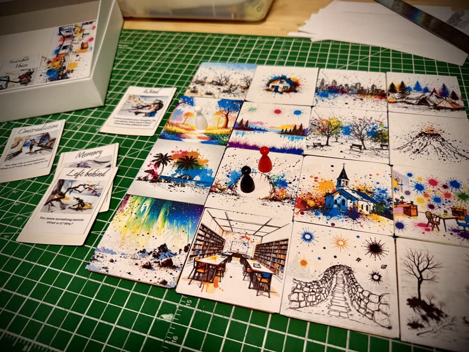

You don't play to win; you play to unfold.
You choose, and you uncover.
Explore selfhood not with labels, but with stories, memory, and meaning. Whether solo or as part of a group, each session reveals a story made
only by your presence.
Key features of JOURNEYWAYS
Gameplay features
Solo or Group Play
Whether you're exploring alone or with friends, JOURNEYWAYS adapts to your preferred style of play.
Solo sessions offer deep introspection, while group play creates rich, collaborative narratives.
Meaningful Choices
Every decision in JOURNEYWAYS carries weight. Your choices don't just affect the game; they reveal
aspects of yourself you might not have known existed.

Game components and board setup
We use cookies to enhance your browsing experience and analyze site traffic. By clicking "Accept", you consent to our use of cookies.